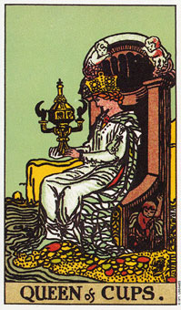

圣杯(骑士)意味在感情和行动之间做出决定。
圣杯(骑士)在发展过程中，学着融合火与水的元素。他的任务包括将他的想象力(水)引导到某些真实的挑战上(火)。它是指跟随灵感而来的行动，或由行动而导引出的灵感。这位骑士学着分析想象和幻想的不同;也就是从无谓的、规避现实的梦想，与能够产生行动和成长之间，了解人生想法的不同。
他的马比起权杖骑士的马要来的消极多了。由于他的想象，现在他已经慢下来了，他需要“摸清”一种形式，并了解自己的情感。头盔和靴子上的翅膀象征他的直觉和想象，那足以令他超越任何可能对抗他的障碍。
他的注意力被前面的目标和手中的杯子所分割。一边是付诸行动的需要，另一边是保持静止的召唤。一条道路将引导他成为权杖国王，另一条路则变成圣杯国王。
这个骑士通常表面相当热情，内心却是温和而敏感。各种人际关系、情感以及创造力的追寻都吸引着他，他们发现他在做决定时，通经常会将伴侣的需求列入考量。如果这张牌是在形容一个人，那么他的年纪应是介于二十一到三十岁之间，具有热情和感情。
大体上的意义
圣杯(骑士)暗示来自某人的供给。例如，生意上的提供或机会的提供。有一个二十来岁的人，或年纪更长但感情年龄只有二十几岁的人，要献给你某种东西。它可能是指情感上的奉献，或某种更为实际的事物。
骑士也意味着一段决定是否等待或行动，让事情充分发展或找寻新机会的时期。为了发现满足，或许现在是随着心意(河流的象征)而为的时候了。
两性关系上的意义
在两性关系分析当中，圣杯(骑士)是形容一种奉献，它通常是来自一个二十几岁热情而敏感的人。在经营两性关系有以上，通常是心底平和、温柔而细心的。在两性关系当中，他有一种与生俱来的亲近或亲密的需求，他所找寻的伴侣是那种可以分享他们梦想的对象。
他的情感还没有到达他应有的成熟度，而他也意识到这点，所以才会要找一个可以协助他、让他感情趋于成熟的伴侣。他要找寻的那个人可以帮助他看清楚，他的梦想是否值得追随，或者那只是幻想而已。
倒立的圣杯(骑士)
当圣杯(骑士)倒立是在形容一个人时，这个人习惯逃避生活所加诸于他的种种需求，而且他可能会承诺一些他无法做到的事情。他摆荡于内在的水与火之间，做事情只是起个头，便扬长而去，然后再将过去及种种可能性加以美化。由于心智尚未成熟或过去的承诺尚未完成或解脱，所以他经常觉得承诺是一件困难的事。
他很容易将爱和色欲或迷恋搞混，而且可能会懒散、怠惰，喜欢沉醉在幻想中而不愿面对现实。在某些情形下，这张倒立牌是形容一位由于某些尚未释怀的悲伤，而不敢在情感上付出的人。他会不断的拿过去的情形和现在做比较，而且可能会要求比自己所能回报的还多。
就一般的角度来看，骑士倒立暗示情感上的失望。它也可以暗示这一种供应或机会将不会实现。当遇上倒立的骑士时，应回到正立的侍卫，以便精通侍卫发展过程中的课题。他现在的行动像个侍卫，梦想着无穷无尽的可能，却很少花心思去决定什么是真的可能、什么又是不切实际的。
查德是一名艺术家。在气质上比在生产力上像艺术家，因为在我经常为他占卜的十年当中，他的生产和销售都很少。他的伴侣，一个圣杯皇后，却支持他，且沉浸在他是位艺术家的幻想中。
有一次他解释说，他唯一真正需要的是一名有钱的赞助者，可以不时的来观看他的作品，并供应他急需的钱。这样的赞助者只是神话故事中的产物，所以他很珍惜他所拥有的――一个伴侣。她以她有限的方式资助他，而他一直深信总有一天全世界都会为了寻找那不凡的天才而络绎于他的家门。
只有相当少数的人被赐予无比的天才，而在他们的领域内傲视群雄，然而大多数的人都被赐予想象自己有此天才的能力。可以理解的事，一个孩子或年轻人在迈向成熟的路上，会有一段时间保有此梦想，但对一个将近四十五岁的人来说，他应该是有充裕的时间去了解，现实和他对人生的幻想并不一样。